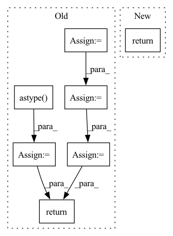

Pattern ID :20928

Before Change
def cross_entropy_loss(ctx: Context, src: jnp.ndarray, tgt: jnp.ndarray) -> typing.Tuple[jnp.ndarray, jnp.ndarray]:
src = promote_to(src, jnp.float32)
max_logit = lax.stop_gradient(src).max(-1, keepdims=True)
log_z = lax.log(lax.exp(src - max_logit).sum(-1, keepdims=True)) + max_logit
loss = log_z - jnp.take_along_axis(src, tgt.reshape(*tgt.shape, 1), -1)
loss = loss.mean()
accuracy = (jnp.argmax(src, 2) == tgt).astype(jnp.float32).mean()
if ctx.training.z_loss:
loss += z_loss(ctx, log_z)
return loss, accuracy
def revnet_out(src: typing.Tuple[jnp.ndarray, jnp.ndarray, jnp.ndarray, jnp.ndarray]) -> jnp.ndarray:
After Change
accuracy = lax.psum(accuracy.mean() / ctx.dims.sizes.heads, ParallelAxes.model)
return (loss, accuracy), _grad
return _fn(src, tgt)
def revnet_out(src: typing.Tuple[jnp.ndarray, jnp.ndarray, jnp.ndarray, jnp.ndarray]) -> jnp.ndarray:
In pattern: SUPERPATTERN
Frequency: 5
Non-data size: 7
Instances
Fragment ID: 67384454
Project Name: homebrewnlp/olmax
Commit Name: 8f05b71862925eb8605e2961688c1171a377d874
Time: 2022-04-19
Author: 39779310+ClashLuke@users.noreply.github.com
File Name: src/model.py
M Class Name: AnonimousClass
N Class Name: AnonimousClass
M Method Name: cross_entropy_loss(3)
N Method Name: cross_entropy_loss(3)
M Parent Class:
N Parent Class:
M File Name: src/model.py
N File Name: src/model.py
M Start Line: 307
M End Line: 315
N Start Line: 338
N End Line: 338
'>
Before Change
def __call__(self, pkg):
pkg = format_package(pkg)
wav = pkg["chunk"]
wav = wav.data.numpy().reshape(-1).astype(np.float32)
warp_factor = random.random() * (self.factor_range[1] - \
self.factor_range[0]) + \
self.factor_range[0]
samp_warp = wav.shape[0] + int(warp_factor * wav.shape[0])
rwav = signal.resample(wav, samp_warp)
if len(rwav) > len(wav):
mid_i = (len(rwav) // 2) - len(wav) // 2
rwav = rwav[mid_i:mid_i + len(wav)]
if len(rwav) < len(wav):
diff = len(wav) - len(rwav)
P = (len(wav) - len(rwav)) // 2
if diff % 2 == 0:
rwav = np.concatenate((np.zeros(P, ),
wav,
np.zeros(P, )),
axis=0)
else:
rwav = np.concatenate((np.zeros(P, ),
wav,
np.zeros(P + 1, )),
axis=0)
if self.report:
if "report" not in pkg:
pkg["report"] = {}
pkg["report"]["warp_factor"] = warp_factor
pkg["chunk"] = torch.FloatTensor(rwav)
return pkg
After Change
wav = wav.view(-1)
warp_factor = random.random() * (self.factor_range[1] - self.factor_range[0]) + self.factor_range[0]
samp_warp = wav.shape[0] + int(warp_factor * wav.shape[0])
samp_warp = 10000
rwav = kaldi.resample_waveform(wav.view(1, -1), self.orig_freq, samp_warp)
rwav = rwav.view(-1)
if len(rwav) > len(wav):
mid_i = (len(rwav) // 2) - len(wav) // 2
rwav = rwav[mid_i:mid_i + len(wav)]
if len(rwav) < len(wav):
diff = len(wav) - len(rwav)
P = (len(wav) - len(rwav)) // 2
if diff % 2 == 0:
rwav = torch.cat((torch.zeros(P, ),
rwav,
torch.zeros(P, )),
axis=0)
else:
rwav = torch.cat((torch.zeros(P, ),
rwav,
torch.zeros(P + 1, )),
axis=0)
rwav = rwav.view(1, -1)
return rwav
'>
Fragment ID: 67384343
Project Name: shangeth/wavencoder
Commit Name: d6ac9e52ccc9dd3afdfc311ad0515c24ca179648
Time: 2020-10-27
Author: shangethrajaa@gmail.com
File Name: wavencoder/transforms/speed.py
M Class Name: SpeedChange
N Class Name: SpeedChange
M Method Name: __call__(2)
N Method Name: __call__(2)
M Parent Class:
N Parent Class:
M File Name: wavencoder/transforms/speed.py
N File Name: wavencoder/transforms/speed.py
M Start Line: 9
M End Line: 38
N Start Line: 12
N End Line: 36
'>
Before Change
immutables = data.immutables
df_decoded_cfs = data.inverse_transform(counterfactuals.copy())
df_decoded_cfs[data.continuous] = df_decoded_cfs[data.continuous].astype("int64")
df_decoded_cfs = df_decoded_cfs[immutables]
df_factuals = data.inverse_transform(factuals)
df_factuals[data.continuous] = df_factuals[data.continuous].astype("int64")
df_factuals = df_factuals[immutables]
// todo add pandas testing rather then casting as ints above?
logical = df_factuals != df_decoded_cfs
logical = np.sum(logical.values, axis=1).reshape((-1, 1))
return logical.tolist()
After Change
intersection(data.categorical, data.immutables)
]
categorical_violations = cfs_categorical_immutable != factual_categorical_immutable
categorical_violations = np.sum(categorical_violations.values, axis=1).reshape(
(-1, 1)
) // sum over features
total_violations = continuous_violations + categorical_violations
return total_violations.tolist()
'>
Fragment ID: 67384448
Project Name: carla-recourse/carla
Commit Name: fb54e70b71f20d0049131c3def1fa83a78132bfe
Time: 2022-04-21
Author: johanheuvel5@gmail.com
File Name: carla/evaluation/violations.py
M Class Name: AnonimousClass
N Class Name: AnonimousClass
M Method Name: constraint_violation(3)
N Method Name: constraint_violation(3)
M Parent Class:
N Parent Class:
M File Name: carla/evaluation/violations.py
N File Name: carla/evaluation/violations.py
M Start Line: 25
M End Line: 39
N Start Line: 29
N End Line: 61